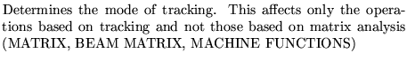
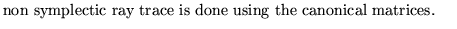
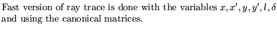
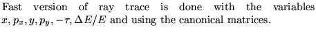
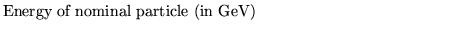

Next: Space charge set up
Up: Use and description of
Previous: Set limits to variables
This operation sets the symplectic option on. As soon as this operation is executed
all the matrices are transformed to the six dimensional space defined
by the canonical variables x,px,y,py,-tau=-t*c=-al,DE/E. Please note
that,in the present implementation the approximation v/c=1 was made.
All the movement analyses performed in the program relate to the
matrix and so the values will change when this option is on. Please
note that this operation changes the sign of the fifth parameter. This
may need to be taken into account in the definition of the lag
parameter of cavities!!!.
NOTE: In the present version of the program , this option cannot be
followed by any fitting which changes matrices. Any fitting not
changing matrices is allowed (eg: in alignment fitting when steering
only is involved)
Input format
SET Symplectic option on......(up to 80 characters)
Option Energy
Parameter definitions
Option 
0 
1 
2 
3
4 
Energy 
Note: Options 3 and 4 are not for the general user. They have been
used and maintained for debugging purposes only.
Examples
The example comes from demo11. Other examples can be found in demos
2 and 9.
set symplectic option: lagrangian variables, fast ray trace
1 6.,
Next: Space charge set up
Up: Use and description of
Previous: Set limits to variables
Dobrin Kaltchev
2004-10-20